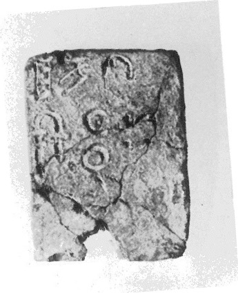
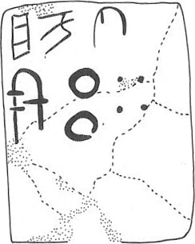

-
KN1a
Names
KN1a, KN 1a
Support
Tablet
Location
Knossos
Findspot
Unavailable


Scribe
Unavailable
Context
Not Available
Dimensions
5.20
3.90
0.90
cm
GORILA OCR
Catalogue
HM 4267
Hiraklion Museum
Readings
1 1 0 JA none
1 1 0 KU none
1 1 0 TI none
2 1 1 E none
2 1 2 200 none
2 1 2 40 none
𐘱𐙂𐘠
𐘡𐄚𐄓
JAKUTI
E20040
𐘱𐙂𐘠𐘡𐄚𐄓
JAKUTIE20040
KN 1
, page tablet (HM 1267) (GORILA I: 256-257) (Temple
Repository, MM III B context)
|
side.line
|
statement
|
logogram
|
number
|
fraction
|
|
a.1-2
|
JA-KU-TI
|
E
|
240
|
|
|
a.3.
|
vacat
|
|
|
|
|
b.1-3
|
JA-DU-RA-TI
|
E
|
105
|
|
a.1-2: cf. A-KU-TU-*361 (TY 3a.7).
b.1-2: cf.
A-DU-[••] (TY 3a.3) & A-DA (TY 3a.5). Is it possible that
/A-DU-R/ is in opposition to /A-KU-T/, as if "receipts"
vs.
"deficits"?
b.3: the number 105 is written with ten 10s and
five
1s.
Commentary © John Younger
References
papers/GORILA-Vol1.pdf#page=292